Satoshi v2.0 - Instructions
Table of Contents
1. Installation
There are two ways in which you can install the Satoshi theme - the easiest approach is to upload the theme through your WordPress admin area. To do this, you need to select the "Themes" page from the Appearance menu and then select the "Add New" button.
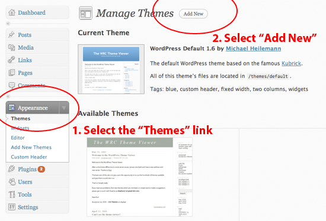You then need to select the "Upload" tab and browse to the location of the satoshi.zip file. Once you have located the file, click the "Install Now" button and it will start installing your theme. This could take anywhere up to a couple of minutes to complete depending on the speed of your internet connection.
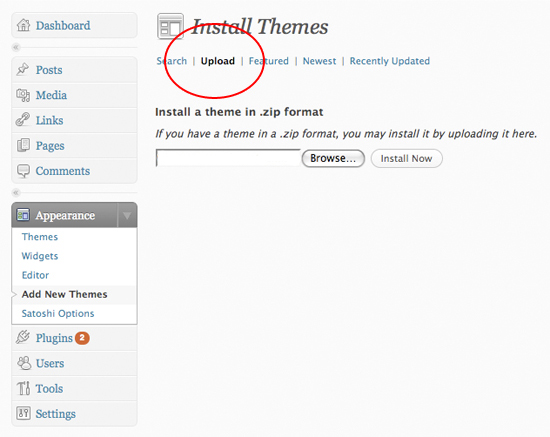Once the upload has completed, return to your "Themes" page and activate the Satoshi theme.
Another way in which you can install the Satoshi theme is to upload the files yourself via FTP. To do this you will initially need to unzip the satoshi.zip file - once you've done this you should have a folder called "satoshi".
Copy this folder to your WordPress "themes" directory using your FTP client of choice. The location of this directory depends on where you installed WordPress, but it will typically be something like public_html/your_blog_name/wp-content/themes/.
Now log into your WordPress installation and access the "Themes" page under the "Appearance" menu - you should be able to see a thumbnail of the Satoshi theme - activate Satoshi and it will replace the old theme you were using.
2. Add Your Own Logo
To upload your own logo, you need to visit the Satoshi Theme Options page in your WordPress admin area.
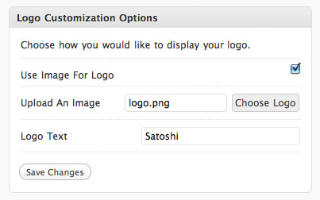If you'd like to use an image, click the "Choose Logo" button and select your image. Also ensure that you tick the "Use Image For Logo" checkbox.
If you'd prefer to use text for the logo, simply type a name in the box provided and the text will be displayed.
Make sure you save any changes made.
3. Navigation
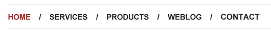To create the navigation section, you initially need to create some pages in your WordPress Admin area. You then need to access the "Menus" link under the "Appearance" tab in left menu:
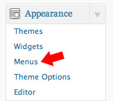Then create a new menu (name it whatever you like) and add all of your pages to that menu.
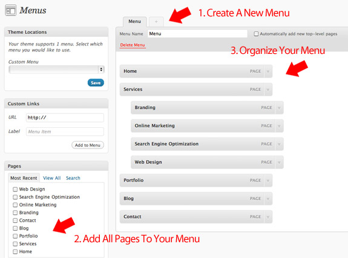Organize the pages how you would like them to appear on your site and then ensure you save any changes made.
4. Create A Front Page
By default, the home page for your site is your blog - however, if you'd prefer to have a separate front page that then links to your blog, you need to follow these steps.
At the very least you will need to have created two pages - in these instructions, we'll assume that you have two pages called "Home" and "Blog" (although you can name them anything you like).
For the "Home" page that you've created you need to tell WordPress to use the appropriate template. To do this, select the page in your WordPress Admin area and select "Front Page" from the dropdown box under the "Template" option.
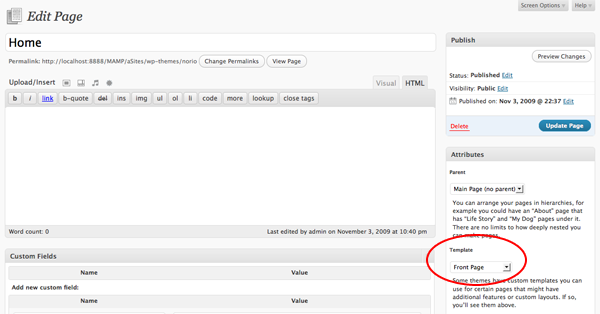Next, you need to access "Settings > Reading" from the WordPress menu to get to the "Reading Settings" page.
For the "Front page displays" field, you want to select the radio button for "A static page" and then set the "Front Page:" dropdown to "Home" and the "Posts Page:" to "Blog" (as seen below).
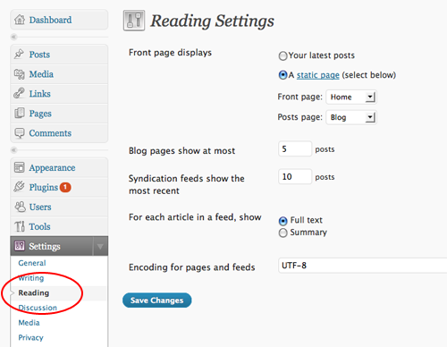If you then save the changes and view your blog you should notice that you now have a homepage that is different from the standard blog page that you would normally see. Your blog posts are accessible through visiting the "Blog" link that you created.
5. Configure The Front Page
There are several areas you'll need to configure on the front page:
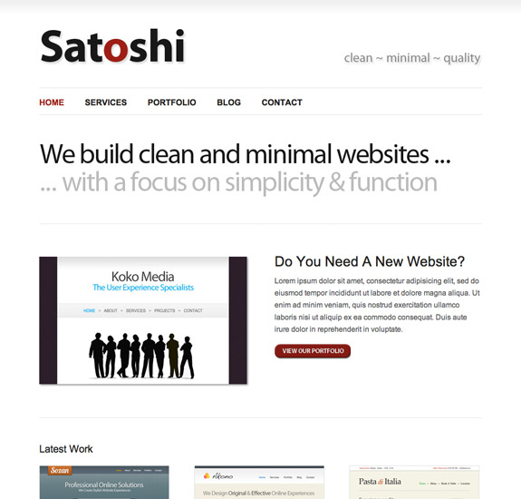Headline
The first area to modify is the main headline:
You can configure what's displayed here by accessing the Satoshi Theme Options page:
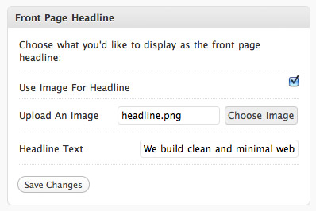If you'd like to use an image for the headline, tick the "Use Image For Headline Box" and then upload an image.
You can edit the headline image text that comes with Satoshi by opening the "photoshop/headline.psd" file (in Photoshop) and then editing the text.
Save the image as "headline.png" and place it in your "images" folder.
If you'd prefer to use plain text as opposed to an image, simply make sure that the "User Image For Headline" box isn't checked and type some text into the "Headline Text" field.
Featured Section
The featured section is located just below the main headline:
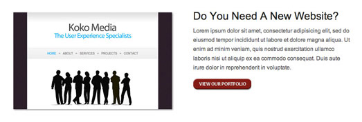You can configure this section on the Satoshi Theme Options page:
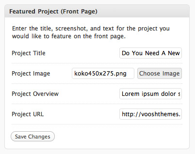Provide the details that are requested and upload an image that you would like to be displayed. Note that this image needs to be 450x275px in size.
Latest Work
The next section contains the three latest items that have been added to the portfolio - this is automatically generated once you have created a portfolio (this will covered in a later step).
Footer
You can edit the copyright text that is displayed in the footer via the Satoshi Theme Options page:
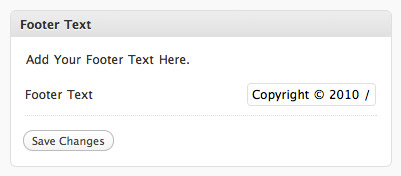Simply type what you would like to be displayed and then save your changes.
6. Build A Portfolio
A Portfolio contains both the portfolio page (where a list of your projects are displayed) and a project page that contains more specific details about each project.
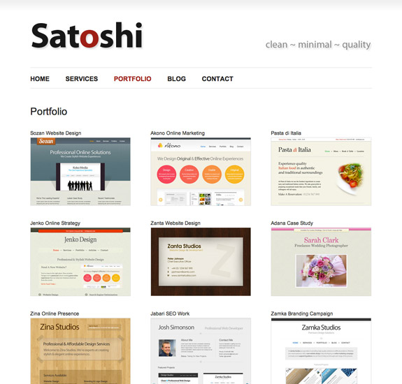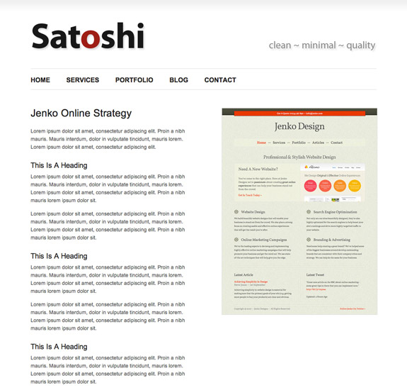
To create a new portfolio you initially need to create a new page called "Portfolio" and set the template for that page to "Portfolio" on the right-hand side of the WordPress admin area (in the same way you did for the front page in step 4).
You then need to access the "My Portfolio" link in the WordPress menu and select the "Add New" link:
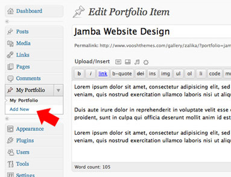Following this, you need to provide a title for the project along with some text related to that project (as seen in the above screenshot).
You also need to provide a URL that will be used as the main image displayed on the right-hand side of the project page - this image needs to have a width no larger than 430px - the height can be any size.
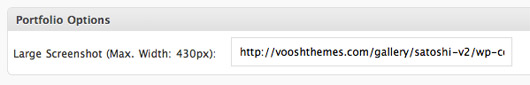The final step you need to take is to upload a thumbnail for the project that will be displayed on the portfolio page you created. This has to be 280x190px in size and you can upload it by selecting the "Set featured image" link on the right-hand side.
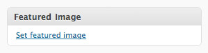7. Create A Contact Page
A Contact Page contains a form that your visitors can complete to get in touch with you - once they've completed the form, the details then get emailed directly into your inbox.
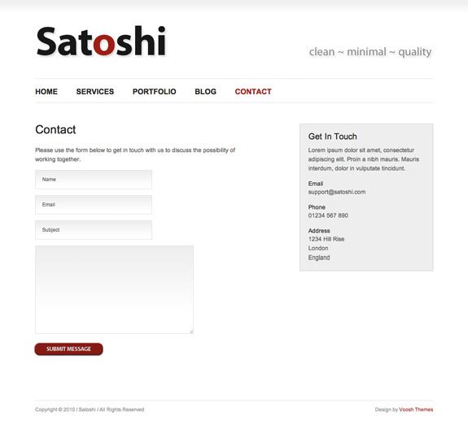To set this up, create a page, and set the template for that page to "Contact".
You then need to edit line 33 of the scripts/contact-process.php file and change the email address to your own.
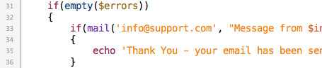Finally, you need to edit the js/contact-form-process.js file and change line 13 so that it includes your URL - so, for example, you would have something like the following:
$.post('http://www.yoursite.com/wp-content/themes/akono/scripts/contact-process.php', {name: input_name, email: input_email, subject: input_subject, message: input_message}, function(data){
You'll also want to edit the contact sidebar - to change these details you'll need to access the Satoshi Theme Options page:
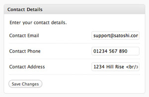Simply add your details and then save the changes you've made.
8. Configure Google Analytics
To configure Google Analytics for your site you'll again need to access the Satoshi Theme Options page:
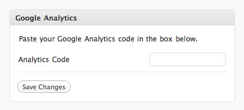Simple copy and paste the code that Google provides you with and save your changes. Google Analytics will then be integrated with your site.